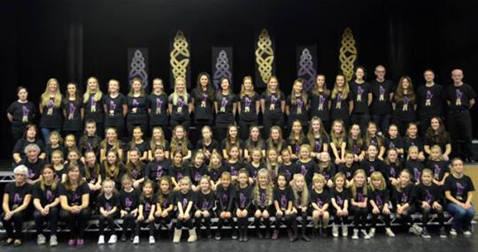

Irish Dancing Lessons
About Scoil Rince Ui Chaidahra
In April 1980 Scoil Rince Ui Chiardha was born, brought together by principle Roseleen Carey. Roseleen taught dancing for many years in Galway before coming to England in 1997 and started a class in Waterlooville and Brighton following requests by local Irish parents. Soon after, more classes in Worthing and Haywards Heath were started and so, the system for travelling around from group to group, area to area became the norm.
Nowadays the classes are in East Preston, Haywards Heath, and Patcham with the desire to grow into more local areas. During the last 17 years, the dancers have taken part in many feiseanna winning awards, reaching the highest level by competing in the World Championships including Belfast, Killarney and Glasgow. The school is also very keen on attending dancing displays around the South East from school fetes to St Patrick day and charity events.

The school believes there is no greater joy than to see a dancer progress from a nervous beginning to a confident well balanced performer, and the teachers Sinead and Sally have grown with the school over the past 15 years of more. They are very experienced dancers and have been teaching alongside Roseleen for many years gaining valuable experience.
One of the schools greatest strength is genuine friendship and throughout the school lifetime the support of the parents has been invaluable. Free trial classes are offered to all new dancers so why not come along and see what you think; we look forward to seeing you soon.